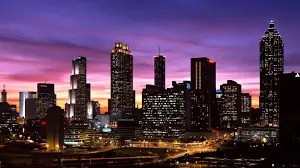
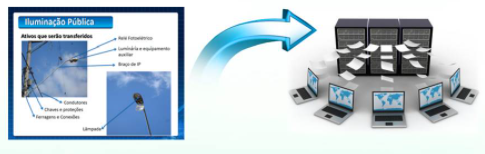
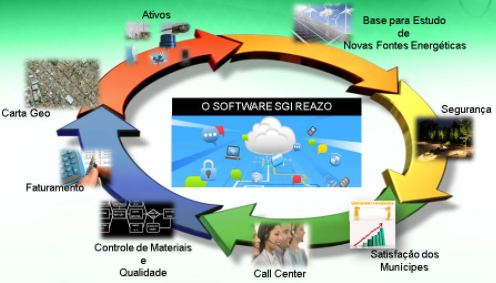

Gestão da Iluminação Pública
- 1º Diagnóstico do parque de iluminação pública
- 2º Plano diretor de iluminação
- 3º Implantação do software de gestão da iluminação pública
- 4º Cadastro do sistema de iluminação pública
- 5º Tela atendimento aos munícipes
- 6º Operação e manutenção do parque de iluminação pública
- 7º Ampliação e modernização do parque de iluminação pública
- 8º Eficientização energética do parque de iluminação
- 9º Gestão da energia consumida pela iluminação pública
- 10º Gestão de qualidade aplicado ao sistema de iluminação pública
- 11º Estudos para implantação de energias renováveis
Objetivos
- Tomar conhecimento do estado de conservação e operação do sistema de iluminação pública assim como do resultado luminotécnico proporcionado pelos equipamentos instalados
- Identificar a possibilidade de melhorias do aspecto técnico visual dos equipamentos utilizados, da possibilidade de redução do consumo de energia elétrica e das intervenções e investimentos necessários à sua adequação
- Identificar e determinar os parâmetros concretos para implantação de rotinas de manutenção
1º Diagnóstico do parque de iluminação pública
- Levantamento do patrimônio de IP do município, apurando qual a tecnologia existente em cada luminária (tipo de lâmpada, consumo, reator, foto sensor, etc.
- Levantamento de coordenadas geográficas dos postes com GPS
- Identificação dos pontos com numeração individual (adesivo ou placa)
- Levantamento do estoque de material de IP
2º Cadastro do sistema de iluminação pública
-

- Contribuição à segurança pública, especialmente nos aspectos relacionados à proteção da população urbana, à segurança do tráfego viário e à melhoria da qualidade de vida
- Melhoria da imagem da cidade e das condições noturnas de uso dos espaços públicos, em atividades de turimo, comércio, esporte e lazer
- Melhoria da qualidade da iluminação pública em termos de maior eficiência luminosa ao menor custo operacional e de manutenção
- Objetiva também que a arrecadação da CIP uporte os custos de consumo de energia, gestão, manutenção e ampliação
- Introdução da gestão energética como uma nova ferramenta em termos aplicação de TI voltada para redução drástica de custos operacionais e de manutenção
- Iluminação de viadutos, pontes e monumentos de valor artístico, cultural e ambiental, bem como de praças públicas de grande circulação, associando a luz a um processo educativo de valorização de bens referenciais para o município e a comunidade
- Diminuição de estoque de reposição face à maior vida útil do material empregado e a reduçãoda diversidade de tipo/potência do equipamento a ser instalado
- Maior segurança e qualidadede vida em termos de opção acertada por uma vida com sustentabilidade social-ambiental
- Minimização dos impactos ambientais decorrentes de novos empreendimentos energéticos
3º Plano diretor de iluminação
Adequação e atualização física, fotométrica e tecnológica da rede de iluminação pública, otimizando seu desempenho qualitativo, operacional e estético
Vantagens e Benefícios
-

4ºImplantação do software de gestão de iluminação pública
O Software SGI REAZO
O software de gestão da iluminação pública, especializado na gestão dos processos de cadastro, operação, manutenção, construção, eficientização e modernização do sistema de iluminação pública tem por objetivo a implantação de novas tecnologias que resultem em redução de custos e processos com significativa melhoria da qualidade da gestão do uso da energia elétrica, do patrimôniodo Município, do controle de materiais, do atendimento à populaçao e da manutenção dos sistemas elétricos.
-

5º Cadastro do sistema de iluminação pública
Todos os componentes do sistena de iluminação pública, patrimônio de propriedade do município, serão levantados, etiquetados e cadastrados em banco de dados informatizado e especializado em gestão de parques de iluminação. Postes, braçõs, luminárias, lâmpadas, reatores, relés com suas características técnicas, serão inseridos no software e disponibilizados aos administradores do municópio oferecendo um instrumento para o controle permanente desse patrimônio público, monitorando sua operação e intervenções de manutenção